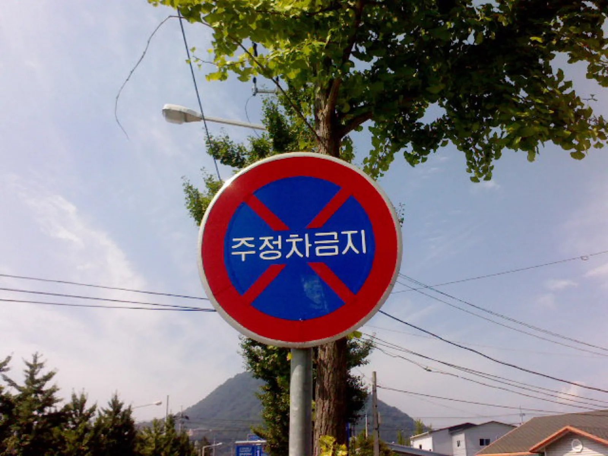
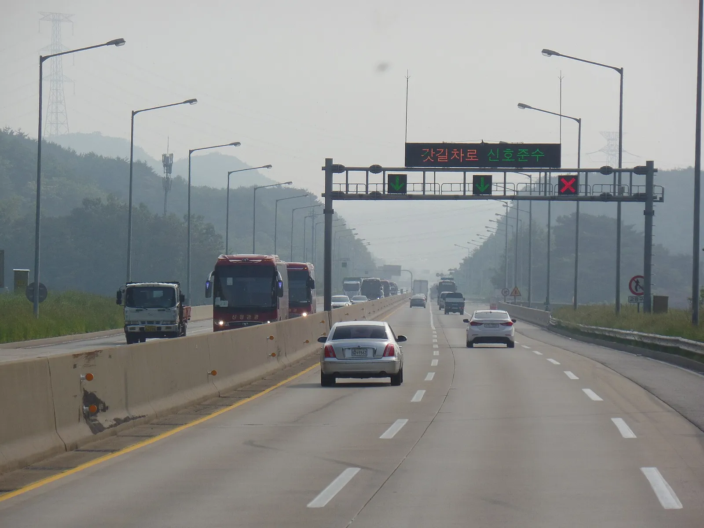
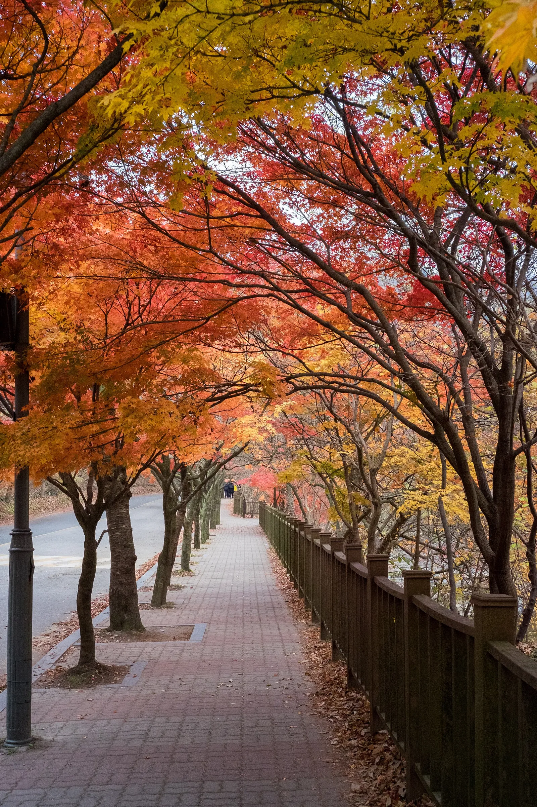
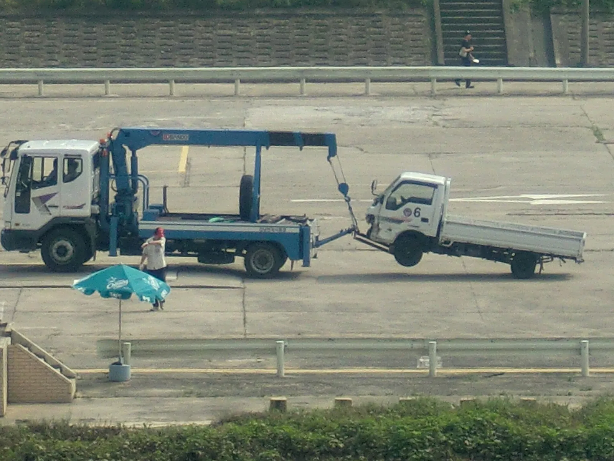
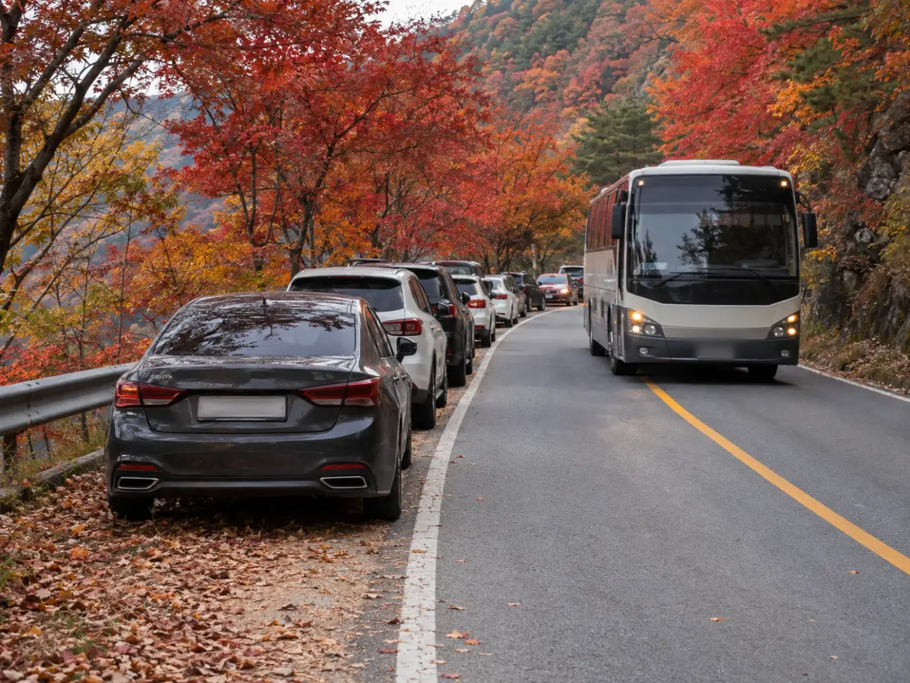
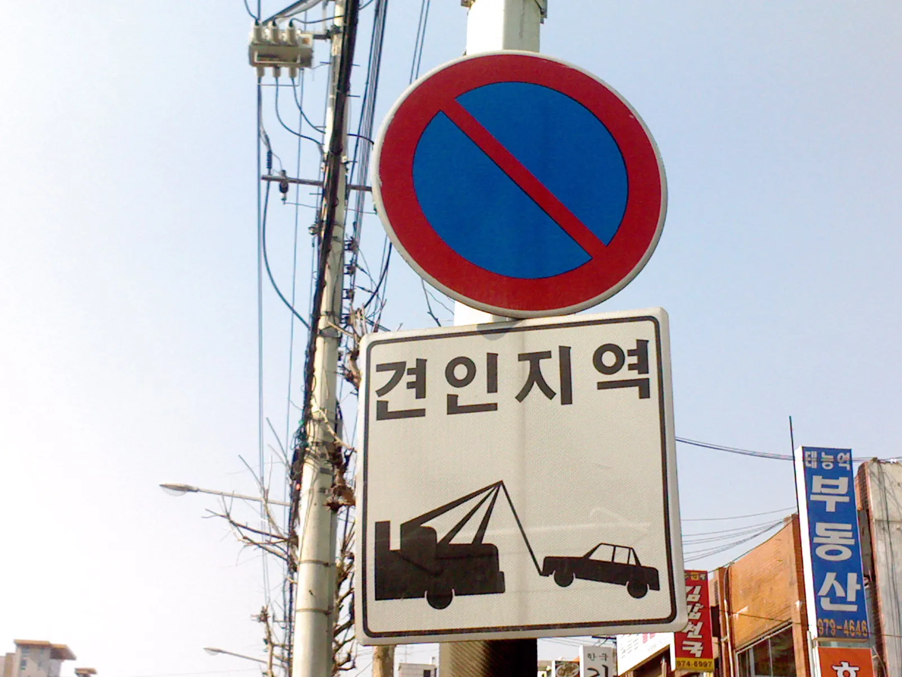
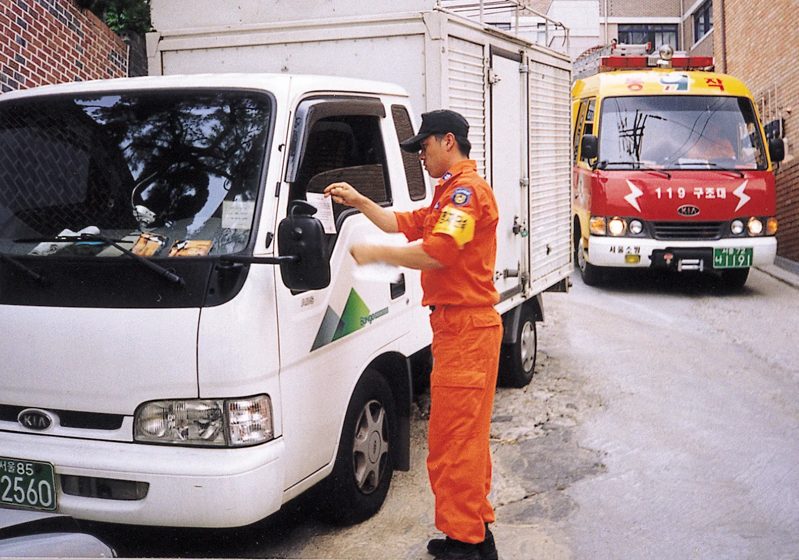

▲ 단풍철에는 도로변 주차 단속이 평소보다 강화되는 곳이 많다 ⓒ Joycekim77, Wikimedia Commons (CC BY-SA 3.0)
"갓길에 세웠는데 잠깐이면 괜찮겠지." 단풍 절정기 국립공원 진입로에서 가장 자주 나오는 말이다. 문제는 그 갓길이 어느 법의 적용을 받느냐에 따라 같은 행동이 4만 원짜리 과태료가 될 수도, 두 법이 겹쳐 적용될 수도 있다는 점이다.
이 글은 도로교통법의 주정차 금지 구역(제32조·제33조), 고속도로 갓길 규정(제60조·제64조), 국립공원 진입로의 자연공원법 단속, 그리고 과태료를 받은 뒤의 감경·이의제기 절차를 단풍철 상황에 맞춰 정리한 것이다. 금액 계산은 본문에 수식을 밝혔고, 확인하지 못한 항목은 그렇게 표시했다. 개인 법률 자문이 아니므로 구체적인 처분은 고지서와 관할 기관 안내를 우선한다.
1. 갓길 주차는 어느 법에 걸리나 — 도로교통법과 자연공원법
단풍철 단속을 이해하는 출발점은 "같은 장소에도 법이 둘 이상 겹칠 수 있다"는 사실이다. 국립공원공단은 2026년 9월 21일부터 11월 30일까지를 가을철 집중관리 기간으로 정하고, 지정되지 않은 장소에서의 취사·야영·주차, 샛길 출입, 흡연 등을 순찰·계도·단속 대상으로 안내했다(보도 기준). 이는 공원 구역 안의 규칙이고, 공원 밖 일반 도로의 주정차는 여전히 도로교통법이 기준이다.
▲ 단풍철 탐방객이 몰리는 설악산 일대는 도로교통법과 자연공원법 단속이 함께 거론되는 곳이다 ⓒ Joycekim77, Wikimedia Commons (CC BY-SA 3.0)
| 구분 | 적용 법령 | 주로 해당하는 장소 | 승용차 부담(확인된 범위) |
|---|---|---|---|
| 일반 도로 주정차 | 도로교통법 제32조·제33조 | 횡단보도·교차로 모퉁이·버스정류소·소화전·터널·다리 위 | 과태료 4만 원(2시간 이상 5만 원) 등 |
| 고속도로·자동차전용도로 | 도로교통법 제60조·제64조·제66조 | 본선 갓길, 길가장자리구역 | 고장 등 예외 외 금지, 갓길 통행은 범칙금·벌점 대상(보도 기준) |
| 국립공원 구역 | 자연공원법 | 지정되지 않은 장소의 주차·야영·취사 | 금액은 위반 유형별로 다름 — 공단·지자체 공지 확인 필요 |
| 겹치는 경우 | 두 법 병행 | 공원 진입 도로변(양양군 오색지구 사례) | 도로교통법과 자연공원법 과태료 이중 부과 방침(군 발표 보도) |
📍 '국립공원 안이라서 단속이 없다'는 오해
도로교통법의 주정차 금지 규정은 일반 교통에 사용되는 도로에 적용된다. 국립공원 인근 지방도·진입로는 대부분 이 범주다. 반대로 공원 구역 안 지정 외 주차는 자연공원법 단속 대상이 될 수 있다. 어느 쪽인지 헷갈린다면 지정된 주차장이 아니면 세우지 않는 것이 가장 단순한 기준이다.
2. 주정차 금지 구역 — 제32조(정차·주차 모두)와 제33조(주차만)
도로교통법은 금지의 강도를 두 단계로 나눈다. 제32조는 정차와 주차를 모두 막는 구역, 제33조는 주차만 막는 구역이다. 단풍철 길목에서 실제로 자주 마주치는 곳만 추려 표로 정리했다.
| 구역 | 기준 | 조문 | 승용차 과태료(2시간 미만) |
|---|---|---|---|
| 횡단보도·교차로 | 해당 위치 | 제32조 | 4만 원 |
| 교차로 모퉁이·도로 모퉁이 | 5m 이내 | 제32조 | 4만 원 |
| 버스정류소 표지 인근 | 10m 이내 | 제32조 | 4만 원 |
| 소화전·소방시설 인근 | 5m 이내 | 제32조 | 8만 원 |
| 보도(인도) | 바퀴 일부 포함 | 제32조 | 4만 원 |
| 터널 안·다리 위 | 해당 위치 | 제33조 | 일반 기준 적용(별도 가중 확인 못 함) |
| 도로공사 구역 | 가장자리 5m 이내 | 제33조 | 일반 기준 적용(별도 가중 확인 못 함) |
| 어린이보호구역 | 지정 구역 | 가중 규정 | 12만 원 |
금액은 행정안전부가 안내한 주민신고제 6대 구역 기준과 기존 카프리즘 기사의 정리와 같다. 6대 구역 전체는 불법주정차 6대 구역 기사에서 따로 다뤘다.

▲ "주정차금지" 표지가 있는 곳은 시간·요일에 상관없이 세우면 안 된다는 뜻이다 ⓒ P.Ctnt, Wikimedia Commons (Public domain)
✅ 갓길(길가장자리) 주차 전 3가지 확인
· 표지·노면표시: 주정차금지 표지, 황색 실선·복선, 노란 연석 표시가 있는지 먼저 본다
· 5m·10m 거리: 모퉁이·소화전은 5m, 버스정류소는 10m. 승용차 한 대 길이(약 4.5~5m)를 기준으로 가늠한다
· 우측 가장자리 규칙: 도로에 주차할 때는 도로 우측 가장자리에 하고, 보도·연석이 없는 도로는 중앙 방향으로 50cm 이상 간격을 두는 것이 서울시 안내 기준이다
3. 과태료 계산표 — 감경과 미납 가산까지 계산해 보면
과태료는 고지서를 받은 뒤의 선택에 따라 크게 달라진다. 아래는 카프리즘이 계산한 표다. 수식은 감경액 = 과태료 × 0.8, 미납 최대액 = 과태료 × (1 + 0.03 + 0.012 × 60) = 과태료 × 1.75이며, 가산 비율(최초 3%, 이후 매월 1.2%, 최대 60개월)은 기존 카프리즘 기사에 정리된 질서위반행위규제법 기준을 그대로 쓴 가정이다.
| 위반 유형 | 기본 과태료 | 20% 감경 후 | 미납 최대(×1.75) |
|---|---|---|---|
| 일반 구역(2시간 미만) | 4만 원 | 3만 2천 원 | 7만 원 |
| 같은 장소 2시간 이상 | 5만 원 | 4만 원 | 8만 7,500원 |
| 소화전 5m 이내 | 8만 원 | 6만 4천 원 | 14만 원 |
| 어린이보호구역 | 12만 원 | 9만 6천 원 | 21만 원 |
📍 단풍 하이킹 시나리오로 계산해 보면
오전 9시에 도로변 갓길에 세우고 오후 1시 이후 돌아오는 코스라면 같은 장소 2시간 이상에 해당해 기본 5만 원이다. 감경 기한 안에 내면 5만 × 0.8 = 4만 원. 한편 견인이 이뤄지면 과태료와 별개로 견인·보관 비용이 든다. 이 비용은 지자체마다 달라 금액은 확인하지 못했다.
시나리오별 실부담 계산 — 같은 위반도 언제 어떻게 처리하느냐에 따라 금액이 달라진다. 수식은 기한 경과 후 금액 = 과태료 × (1 + 0.03 + 0.012 × 경과 개월 수)이며, 3% 가산금과 월 1.2% 중가산금이 질서위반행위규제법 기준이라는 것은 앞 계산표와 같은 가정이다. 원 단위로 반올림했고 node로 검산했다.
| 상황(가정) | 고지액 | 기한 내 20% 감경 | 기한 경과 직후(×1.03) | 6개월 미납(×1.102) | 12개월 미납(×1.174) |
|---|---|---|---|---|---|
| 일반 구역 1시간 주정차 | 4만 원 | 3만 2천 원 | 4만 1,200원 | 4만 4,080원 | 4만 6,960원 |
| 같은 장소 4시간(2시간 이상) | 5만 원 | 4만 원 | 5만 1,500원 | 5만 5,100원 | 5만 8,700원 |
| 소화전 5m 이내 1시간 | 8만 원 | 6만 4천 원 | 8만 2,400원 | 8만 8,160원 | 9만 3,920원 |
| 어린이보호구역 | 12만 원 | 9만 6천 원 | 12만 3,600원 | 13만 2,240원 | 14만 880원 |
표에서 보듯 5만 원짜리 위반을 기한 안에 처리하면 4만 원, 12개월 방치하면 5만 8,700원으로 1만 8,700원 차이가 난다. 감경은 의견 제출 기한 안에 내야만 받을 수 있어 기한을 놓치는 순간 사라진다. 이 표는 도로교통법 과태료만 다룬다. 양양군 오색지구처럼 자연공원법 과태료가 함께 부과될 수 있는 곳은 합계가 더 커진다. 국립공원공단 2026년 7월 보도에는 지정 장소 밖 야영의 1차 과태료가 20만 원으로 소개됐지만, 지정 외 주차의 과태료 금액은 이번 조사에서 확인하지 못했다. 같은 보도에서 2023~2025년 여름철 국립공원 적발 2,480건 중 불법주차가 808건으로 가장 많은 유형이었다.
✅ 2026년 개정 여부 — 확인한 범위
· 승용차 주정차 과태료 금액(4만·5만 원 등)을 바꾸는 확정 개정은 이번 조사에서 확인하지 못했다
· 2026년 9월 보도에는 국회에서 같은 장소 24시간 이상 장기 불법주차에 기간에 비례한 추가 과태료를 매기자는 개정안 발의 내용이 나왔다. 발의 단계이며 시행된 것이 아니다
· 최신 금액은 고지서와 경찰청·지자체 안내로 다시 확인할 것
4. 고속도로·자동차전용도로 갓길 — 단풍 구경 정차는 왜 안 되나
고속도로 갓길은 주차 공간이 아니라 고장 등 비상 상황을 위한 공간이다. 도로교통법 제60조는 고속도로 등에서 자동차의 고장 등 부득이한 사정이 있는 경우를 제외하고는 갓길 통행을 금지하고, 제64조는 고속도로 등에서 정차·주차를 금지한다. 제64조의 예외는 법령·경찰공무원 지시나 위험 방지를 위한 일시 정차, 안전표지로 허용된 곳, 고장 등 부득이한 사유로 길가장자리구역(갓길 포함)에 세우는 경우 등이다.

▲ 일부 구간은 갓길을 차로로 운영한다. 신호가 열려 있지 않은 갓길은 비상용 공간이라는 점은 같다 ⓒ Jhcbs1019, Wikimedia Commons (CC BY-SA 4.0)
| 상황 | 조문 | 허용 여부 | 확인된 부담 |
|---|---|---|---|
| 갓길 통행 | 제60조 | 고장 등 부득이한 경우만 | 벌점 30점은 생활법령정보가 갓길 통행 위반의 벌점 사례로 안내, 현장 단속 범칙금 6만 원은 보도·검색 기준(시행령 별표 원문은 직접 열람 못 함) |
| 단풍·경치 구경 정차 | 제64조 | 예외 사유에 해당하지 않아 금지 | 구체 금액은 시행령 별표 직접 대조 못 함 |
| 고장으로 갓길 정차 | 제64조 예외·제66조 | 허용, 단 표지 설치 의무 | 조치의무 위반 시 승용차 범칙금 4만 원(검색 결과 기준) |
| 휴게소·졸음쉼터 | 제64조 예외(안전표지·정류장) | 허용 | 해당 없음 |
고장이 났을 때는 후방에 고장 표지를 세우고 야간에는 적색 섬광신호를 함께 설치해야 한다(생활법령정보 안내). 2차사고 위험과 대처 순서는 고속도로에서 차가 멈췄을 때 기사에 정리돼 있고, 단풍철 고속도로 정체 시간대는 단풍철 고속도로 교통 데이터 기사에서 볼 수 있다.
📍 정체가 심해도 갓길로 빠지면 안 된다
단풍철 귀경길 정체에서 갓길을 달리거나 갓길에 정차하는 행위는 부득이한 사정으로 보기 어렵다. 급한 사정이라면 다음 휴게소·졸음쉼터까지 이동하고, 정말 위험하다면 비상등을 켜고 후방 표지를 세운 뒤 가드레일 바깥쪽 안전한 곳으로 대피한 상태에서 도움을 요청한다.
5. 국립공원 진입로와 지자체 단풍철 단속 — 확인되는 사례만
2026년 단풍철에는 지자체 발표로 확인되는 임시 단속이 여럿이다. 아래는 보도로 확인한 것만 모은 표다. 구체 시행 여부와 금액은 각 지자체·국립공원 공지를 다시 확인해야 한다.

▲ 내장산 단풍길 일대는 단풍철 차량 통제와 셔틀 운영이 겹치는 곳이다. 사진은 단풍나무가 늘어선 길 ⓒ Norton Ip, Wikimedia Commons (CC BY-SA 2.0)
| 지역 | 기간 | 내용 |
|---|---|---|
| 전국 국립공원(공단) | 9월 21일~11월 30일 | 샛길 출입·지정 외 취사·야영·주차·흡연 등 순찰·계도·단속 |
| 설악산 오색지구(양양군) | 9월 28일~11월 8일(집중 관리 10월 3일~) | 오색령 정상~남설악탐방지원센터 구간 하루 27명 투입, 불법 주정차 단속·주차 안내, 도로교통법·자연공원법 이중 부과 방침 |
| 흘림골~남설악탐방지원센터 | 집중 관리기간 | 하차를 위한 일시 정차만 허용, 전세버스 등 대형차는 오색관터 공영주차장 이용 |
| 설악산 소공원(속초시) | 단풍철 | 교통상황실 모니터링, 설악동 B·C지구~소공원 무료 셔틀, 경찰 통제, 모범운전자 주차 안내 |
| 내장산(정읍시) | 10월 26일~11월 22일(28일간), 집중 관리 10월 31일~11월 15일 | 교통·안전 종합대책 — 방향 안내 표지 보강, 주차 안내 인력 배치, 내장호주차장~월령교 무료 셔틀, 호객행위 단속 강화(전국매일신문 보도). 보도 원문에서 불법 주정차 단속 항목은 확인하지 못했다 |
| 내장산 국립공원 | 10월 30일~11월 15일 | 내장호 주차장~월령교 구간 무료 셔틀, 공원 내 차량 진입 제한 |
예약주차·차량통제의 구조는 따로 정리한 기사로 연결한다. 국립공원 전체의 탐방예약 데이터는 국립공원 단풍철 탐방예약 기사, 설악산 소공원 수신호 통제는 설악산 소공원 기사, 내장산 셔틀 구간은 내장산 차량통제 기사를 보면 된다.

▲ 불법 주차 차량은 이동 명령이나 견인 대상이 될 수 있다(견인 차량 사례 사진) ⓒ hyolee2, Wikimedia Commons (CC BY-SA 3.0)
📍 견인은 어떻게 진행되나
지자체 안내(인천시 교통 안내 등)에 따르면 경찰 또는 시장 등이 임명한 공무원은 불법 주차 차량의 이동을 명하거나 직접 이동·견인할 수 있고, 비용은 차량 소유자가 부담한다. 일정 기간 찾아가지 않으면 매각·폐차 절차가 가능하다고 안내된다. 단풍철 임시 견인 건수·견인료 금액은 이번 조사에서 확인하지 못했다.
6. 단풍 명소 5곳 진입로 주차·셔틀 비교 — 어디서 세워야 단속을 피하나
단속을 피하는 가장 확실한 방법은 도로변이 아니라 지정 주차장·환승 주차장에 세우는 것이다. 아래 표는 카프리즘이 앞서 다룬 명소별 기사의 정리를 한 장으로 모은 것이다. 올해 통제·셔틀 일정은 공단·지자체가 단풍 진행을 보고 정하는 만큼, 이번 글에서 원문을 새로 열어 확인한 올해 사례는 양양군과 정읍시뿐이고 나머지는 예년·기사 작성 시점 기준이다.

▲ 좁은 산간 도로의 갓길 주차는 반대편 버스와 구급차의 통행을 막는다(설명용 AI 생성 장면, 실제 장소 아님) ⓒ CarPrism (AI 생성 이미지)
| 명소 | 진입로·주차 방식 | 주차료(승용 기준) | 만차·대안 | 확인 수준 |
|---|---|---|---|---|
| 설악산 소공원·오색 | 소공원 만차 시 경찰·모범운전자 수신호로 진입 통제. 오색지구는 양양군이 9월 28일~11월 8일 단속(2026) | 소공원 6,000원 정액(예년) | 설악동 B·C지구 주차장 + 무료 셔틀. 오색은 오색관터 공영주차장(대형차) | 올해 양양·속초 대책은 보도 확인, 요금은 예년 |
| 오대산 월정사 | 월정사·상원사·진고개 3개 주차장 | 6,000원(경차·전기차 3,000원) | 진부시외버스터미널에서 226·227번 버스로 월정사·상원사 경유 | 단풍철 별도 통제·단속 공지는 확인 못 함 |
| 내장산 | 내장호주차장~월령교 약 2.1km 차량 통제와 무료 셔틀(예년 패턴), 정읍시 대책 10월 26일~11월 22일 | 중·소형 주중 4,000원·주말 5,000원(당일 정액) | 내장호주차장에 세우고 셔틀 환승, 만차 시 도로변 바깥에서 도보 | 2026 셔틀 구간은 정읍시 대책 보도 확인 |
| 지리산 노고단·성삼재 | 구례군 군도 12호선 성삼재 주차장, 운영 05:00~17:00 | 첫 1시간 1,100원 + 10분당 300원, 일 상한 13,000원 | 만차 시 화엄사 주차장에 세우고 군내버스. 군도 통행 제한은 구례군 공지 확인 | 2026 단풍철 통행 제한 일정은 확인 못 함 |
| 주왕산 | 탐방지원센터 앞 주차장 + 대전사 방면 도보 | 자료마다 상이(소형 1,500~2,000원) | 늦으면 먼 주차장 이용, 도보 거리 증가 | 단풍철 임시 통제·단속은 확인 못 함 |
명소별 상세는 설악산 소공원 기사, 오대산 월정사 기사, 내장산 기사, 지리산 노고단 기사, 주왕산 기사에 있다.
📍 표에서 읽을 수 있는 공통점
5곳 모두 주차료는 하루 6,000원 안팎 이하(지리산은 장시간이면 13,000원 상한)로, 과태료 4만 원의 15% 안팎이다. 반대로 주차장이 만차라고 해서 갓길이 빈 주차 공간이 되는 것은 아니다. 만차일 때의 정해진 대안(셔틀·환승 주차장·버스)이 곳곳에 따로 마련돼 있다는 점이 이 표의 핵심이다.
7. 과태료를 받았다면 — 의견진술·감경·이의제기
과태료는 고지서 한 장으로 끝나지 않는다. 단속 후 사전통지서가 오고, 여기에 의견 제출 기한이 있다. 경찰청 교통민원24와 지자체 안내에 따른 큰 흐름은 아래와 같다.
| 단계 | 기한·내용 | 할 일 |
|---|---|---|
| ① 사전통지 | 단속 후 의견진술 기간(지자체 안내상 통상 약 20일) | 사실관계 확인, 사진·표지 상황 점검 |
| ② 의견 제출 | 기한 안에 서면·인터넷으로 의견 진술 | 억울하면 증빙과 함께 제출 |
| ③ 자진 납부 | 의견 제출 기한 내 | 20% 감경(질서위반행위규제법 제18조) |
| ④ 이의제기 | 부과 통지를 받은 날부터 60일 이내 | 관할 행정청에 서면 제기 → 법원 과태료 재판 |
| ⑤ 미납 | 가산금·중가산금 누적 | 최대 75%까지(앞의 계산표) |
타임라인 예시 — 날짜를 넣어 보면 기한의 차이가 분명해진다. 단속일·통지 시점은 모두 가정이며, 실제 기한은 고지서·사전통지서에 적힌 날짜를 따른다. 일수는 node로 계산했다.
| 시점 | 날짜(가정) | 계산·의미 |
|---|---|---|
| 단속·신고 | 2026년 10월 17일(토) | 현장 단속 또는 안전신문고 신고(같은 위치 1분 이상 간격 사진 2장) |
| 사전통지서 발송 | 10월 28일(수) | 발송 시점은 지자체마다 다름 — 단속 후 며칠 걸리는지는 확인하지 못했다 |
| 의견진술·감경 기한 | 11월 17일(화) | 발송일 + 20일. 금천구 안내는 사전통지서 발송일부터 20일, 이 안에 자진 납부하면 20% 감경 |
| 부과 고지서 수령 | 11월 20일(금) | 의견이 받아들여지지 않거나 감경 기한을 넘기면 정식 고지 |
| 이의제기 마감 | 2027년 1월 19일(화) | 수령일 + 60일(초일 불산입 가정). 감경 기한과 별개의 기한 |
▲ 고지서가 오면 먼저 달력에 두 기한(감경·이의제기)을 적는다(설명용 AI 생성 장면, 실제 고지서 아님) ⓒ CarPrism (AI 생성 이미지)

▲ "견인지역" 표지가 있는 곳은 단속 시 곧바로 견인될 수 있다 ⓒ P.Ctnt, Wikimedia Commons (Public domain)
✅ 이의제기 전에 챙길 것
· 현장 표지·노면표시의 유무와 위치(5m·10m 기준 거리)를 사진으로 남긴다
· 단속 시각과 실제 주정차 시간이 다른지 확인한다(2시간 가중 여부에 영향)
· 감경 기한과 이의제기 기한은 서로 다르다 — 선택 전에 기한부터 확인한다
· 더 자세한 절차는 주정차 과태료 감경·이의신청 기사를 참고한다
8. 안전신문고 신고 대상 — 신고하는 쪽과 당하는 쪽 모두의 기준
주민신고제는 소화전·교차로 모퉁이·버스정류소·횡단보도·어린이보호구역·보도 6대 구역에서 1분 이상 주정차한 차량을 안전신문고 앱으로 신고할 수 있는 제도다. 요건은 같은 위치에서 1분 이상 간격으로 찍은 사진 2장이다. 신고가 요건을 갖추면 현장 단속 없이 과태료 부과 절차로 이어질 수 있다.

▲ 소화전·소방차 통행로 확보는 단속의 핵심 이유다(2000년대 초반 서울 소방 활동 사진) ⓒ 서울특별시 소방재난본부, Wikimedia Commons (CC BY-SA 4.0)
| 지점 | 6대 구역 여부 | 신고·단속 가능성 |
|---|---|---|
| 마을 입구 소화전 앞 | 해당(소화전 5m) | 높음 — 승용 8만 원 |
| 횡단보도 앞 갓길 | 해당 | 높음 — 승용 4만 원 |
| 버스정류소 인근 도로변 | 해당(10m) | 높음 — 승용 4만 원 |
| 국립공원 진입 지방도 일반 갓길 | 6대 구역 아님 | 주민신고 대상이 아니어도 지자체·공단 현장 단속 가능 |
| 고속도로 갓길 | 해당 없음 | 도로교통법 제60조·제64조로 별도 단속 |
▲ 주민신고는 같은 위치에서 1분 이상 간격의 사진 2장이 요건이다(설명용 AI 생성 장면, 실제 신고 사례 아님) ⓒ CarPrism (AI 생성 이미지)
신고 방법과 요건은 안전신문고 신고 가이드 기사에 정리했고, 신고는 안전신문고 바로가기에서 할 수 있다.
📍 비상등을 켜도 면책되지 않는다
6대 구역에서는 비상등을 켜 둔 채 잠깐 세워도 신고 요건이 성립할 수 있다. 단풍철 마을 길에서 "잠깐 사진만"이라는 이유로 소화전·횡단보도 앞에 세우는 것이 가장 흔히 문제 되는 유형이다.
✅ 단풍철 출발 전 주차 체크리스트
· 목적지 국립공원·지자체의 차량통제·예약주차·셔틀 공지를 전날 확인한다
· 지정 주차장에 자리가 없으면 도로변이 아니라 다음 주차장·환승 주차장으로 간다
· 고속도로에서는 휴게소·졸음쉼터를 이용하고 갓길은 비상용으로만 쓴다
· 횡단보도·소화전·정류소·모퉁이 근처에는 어떤 경우에도 세우지 않는다
· 과태료를 받으면 기한을 달력에 적고 감경 또는 이의제기 중 하나를 선택한다
9. 요약
단풍철 갓길 주차의 위험은 법이 겹친다는 데 있다. 일반 도로는 도로교통법(제32조·제33조)이 기준이어서 승용차는 4만 원(같은 장소 2시간 이상 5만 원), 소화전 5m 이내는 8만 원이다. 국립공원 진입로는 양양군이 오색지구에서 도로교통법과 자연공원법 과태료를 이중으로 부과하겠다고 밝힌 사례가 있다.
고속도로·자동차전용도로 갓길은 고장 등 부득이한 경우가 아니면 통행·정차·주차가 금지된다. 과태료를 받았다면 의견 제출 기한 안에 자진 납부해 20% 감경(4만 원 → 3만 2천 원)을 받거나, 통지를 받은 날부터 60일 이내 이의제기를 선택한다. 미납은 최대 75%까지 가산된다.
이 글은 일반 정보이며 개인 법률 자문이 아니다. 구체적인 처분은 고지서와 경찰청·관할 지자체·국립공원공단의 최신 안내를 따른다. 견인료·고속도로 정차 위반 금액·자연공원법 지정 외 주차 과태료·정읍시 불법 주정차 단속 세부는 확인하지 못했다.